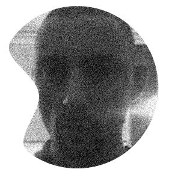
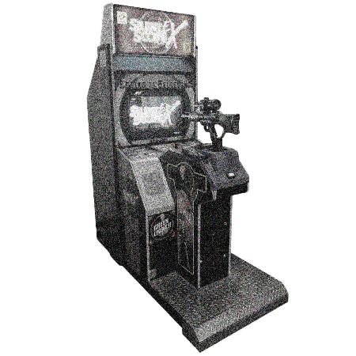
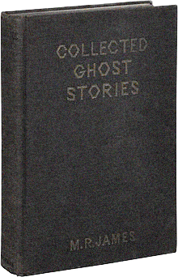
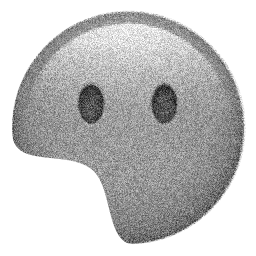
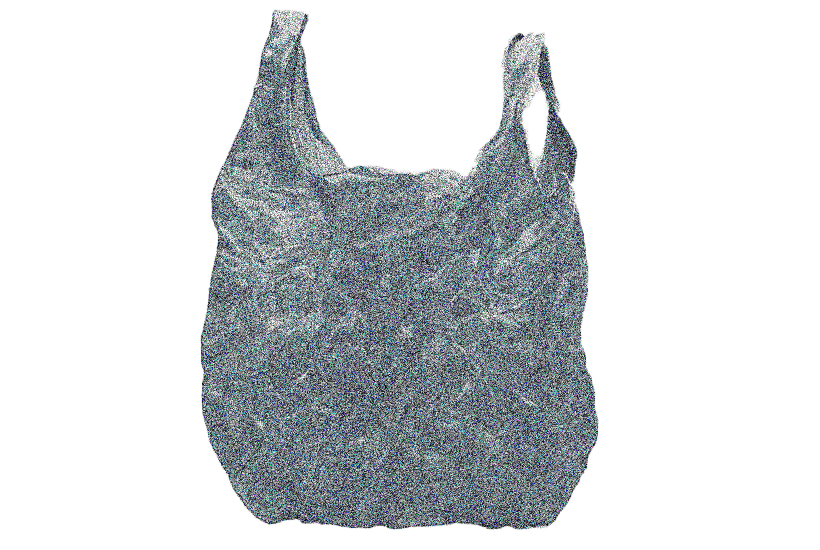
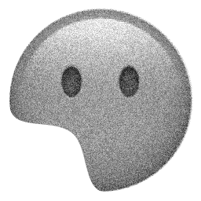
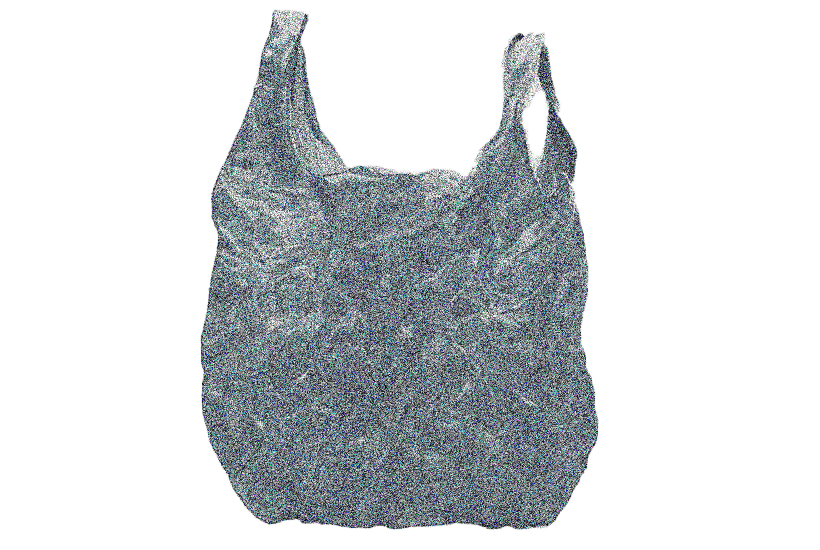
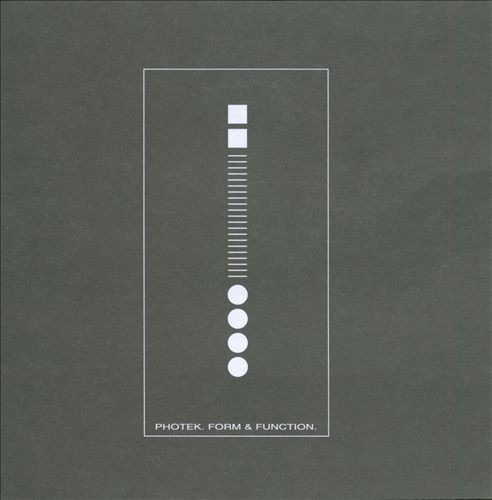
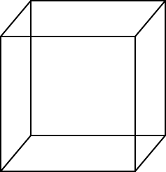

Wire:
What other influences do you have outside music?
Burial: PlayStation games. A lot of my drums are just people picking up new ammo and weapons in games. I love shells falling to the floor, power-ups, like when you get extra life. It would be good if you could do that in real life: pick up extra lives, fight end-of-level-guardians down by the shops, use cheat-modes. I spent all my pocket money trying to complete Silent Scope at the arcade. I was brought up on that stuff. My Dad when I was really little, sometimes he used to read me M. R. James stories. On the South Bank last year, I was walking along, and I found a book of M. R. James ghost stories . I bunked that day off from my day job and I got this book, and now I'm well into M. R. James ghost stories.
Wire: You’re joking, really?
Burial: There’s a few ghost stories, the one that fucked me up when I was little. “Oh Whistle and I'll Come To You My Lad.” Something can betray how sinister it is even at a distance. Something weird happens with M R James, because they’re short—and I don’t read much—and even though it’s in writing, there’ll be a moment, when the person meets the ghost, where you can’t quite believe what you’ve read, you go cold, just for those few lines when you glimpse the ghost for a second, or he describes the ghost face. It's like you’re not reading any more. In that moment it burns a memory into you that isn't yours. He says something like, ‘there’s nothing worse for a human being than to see a face where it doesn’t belong’. But if you’re little, and you’ve got an imagination which is always messing you up and darking you out, things like that are almost comforting to read. Also, there is nothing worse than not recognizing someone you know, someone close, family, seeing a look in them that just isn't them. I was once in a lock-in in a pub and the regulars there and some mates started telling these fucked up ghost stories from real life, maybe that had happened to them, and I swear if you heard them. One girl told me the scariest thing I ever heard. Some of these stories would stop a few words earlier than seemed right, they don't play out like a film, they're too simple, too everyday, slight, those stories ring true and I never forgot them. Sometimes maybe you see ghosts on the underground with an empty Costcutters plastic bag, nowhere to go. They are smaller, about 70% smaller than a normal person, smaller than they were in life.
Something can betray how sinister it is even at a distance. Something weird happens with M R James, because they’re short—and I don’t read much—and even though it’s in writing, there’ll be a moment, when the person meets the ghost, where you can’t quite believe what you’ve read, you go cold, just for those few lines when you glimpse the ghost for a second, or he describes the ghost face. It's like you’re not reading any more. In that moment it burns a memory into you that isn't yours. He says something like, ‘there’s nothing worse for a human being than to see a face where it doesn’t belong’. But if you’re little, and you’ve got an imagination which is always messing you up and darking you out, things like that are almost comforting to read. Also, there is nothing worse than not recognizing someone you know, someone close, family, seeing a look in them that just isn't them. I was once in a lock-in in a pub and the regulars there and some mates started telling these fucked up ghost stories from real life, maybe that had happened to them, and I swear if you heard them. One girl told me the scariest thing I ever heard. Some of these stories would stop a few words earlier than seemed right, they don't play out like a film, they're too simple, too everyday, slight, those stories ring true and I never forgot them. Sometimes maybe you see ghosts on the underground with an empty Costcutters plastic bag, nowhere to go. They are smaller, about 70% smaller than a normal person, smaller than they were in life.
Wire: Where I live now, in Suffolk, was where James set many of his stories. Some of the names of the places in the stories are thinly coded names of Suffolk towns.
Burial: I love that, like old churchyards, factories, places out of the way. I used to get taken away to the middle of nowhere, by the sea, I love it out there, because when it’s dark, it’s totally dark, there’s none of this ambient light London thing. We used to have to walk back and hold hands and use a lighter. See the light, see where you were and then you’d walk on, and the image of where you’ve just were would still be on your retina. You couldn’t see anything, but you’d see stars. Loads of the drums on the new album are just a lighter. I love lighters and Swan Vesta matches, the drums on every tune are the same, this little noise.
the drums on every tune are the same, this little noise.
The thing I love about M. R. James, it’s almost like you learn a lesson off the stories, which is to be obsessed with a similar kind of effect until you get it right, because you’re basically circling similar ideas. It’s not about things sounding the same, they’re just, I don’t know what the word would be, singular. Like Photek used to be. The techniques hit you between the eyes because they are so fucking focused, obsessed by the same devices. With M. R. James, it’s that ghost story thing, someone told me this story, or I knew this person—it’s a device to deliver the story into your world. Urban legends get woven so you're unable to be sure it's untrue. A statistician would say: of all the millions of ghost stories ever told, what percentage would have to be true for ghosts to exist? The answer is that only one story would have to be true. The new tunes are a tiny misdirection, so I can steal away unseen to the next place.

RETURN
RETURN